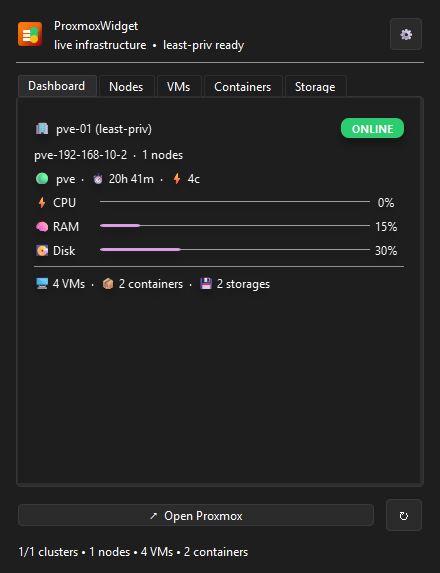

ProxmoxWidget — Proxmox VE Desktop Client (Tray)
Live infrastructure at a glance. A lightweight tray app for Proxmox VE that shows nodes, VMs, LXC and storage without opening the browser. Works on Windows, Linux and macOS.

ProxmoxWidget on Windows — live pve-01 dashboard (440×573, window frame). Single hero keeps the page fast. See GitHub for source.
Download — no Python needed
Grab a ready-to-run build from GitHub Releases. Installer for Windows, portable ZIP, Linux tar.gz and macOS tar.gz. Every file is checksummed with SHA256SUMS.txt.
Why ProxmoxWidget
Multi-cluster tray
Add many host:port endpoints, totals roll up in the header tooltip. One click to Open Proxmox in browser.
Least-privilege tokens
Uses PVEAPIToken, never root password. PVEAuditor + VM.Audit, optional VM.PowerMgmt. Stored in OS keyring.
Live & reliable
Auto-refresh, WAIT state polling, OFFLINE badge instantly. In-app banner, no popup spam. pythonw quiet on Windows.